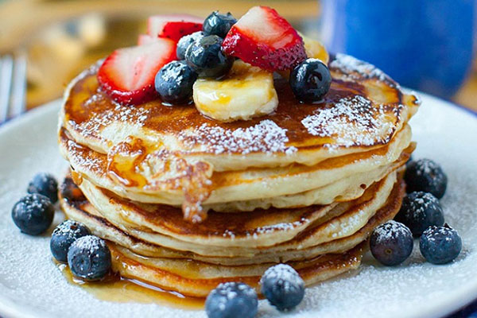

Pannkoogi valmistamine
| Koostisosad |
Kogus |
| piim |
0,5l |
| muna |
2tk |
| sool |
0,5sp |
| suhkur |
100g |
| jahu |
2 klaasi |
| toiduõli |
silmajärgi |

Juhend
- Munad kloppida lahti suhkru ja soolaga, lisada vaheldumisi jahu ja piim.
- Võimaluse korral lasta taignal 0.5 – 1 tund seista, et jahu paisuks.
- Praadida kuumas rasvas õhukesed ülepannikoogid mõlemalt poolt helepruuniks.
https://sisukas.ee/toit/retseptid/pannkoogid/